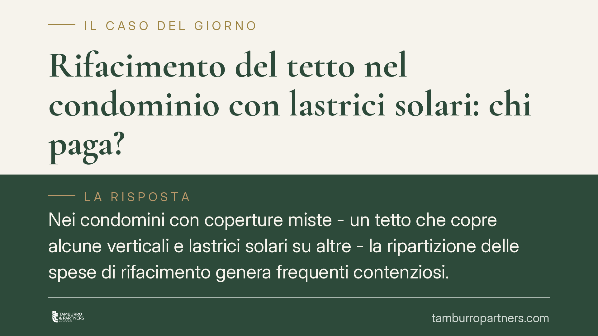

Rifacimento del tetto nel condominio con lastrici solari: chi paga?
Nei condomini con coperture miste - un tetto che copre alcune verticali e lastrici solari su altre - la ripartizione delle spese di rifacimento genera frequenti contenziosi. La regola è chiara: paga chi è coperto da quella struttura. Ma gli appartamenti collocati a cavallo tra due coperture pongono problemi di calcolo che l'assemblea deve affrontare con criterio tecnico, non arbitrario.

Il problema: coperture diverse nello stesso edificio
Molti edifici non hanno un'unica copertura. Capita spesso che una porzione del fabbricato sia protetta da un tetto a falde, mentre un'altra sia chiusa da uno o più lastrici solari (le superfici piane calpestabili che fungono da copertura).
Quando occorre rifare il tetto, la domanda ricorrente è: devono contribuire tutti i condomini oppure solo quelli effettivamente coperti da quella struttura? La risposta incide in modo rilevante sui bilanci dei singoli e, non di rado, finisce davanti al giudice.
Inquadramento normativo
Il punto di partenza è l'art. 1123, comma 3, del codice civile. La norma stabilisce che, quando un edificio ha più parti destinate a servire i condomini in misura diversa, le spese sono ripartite in proporzione all'uso che ciascuno può farne.
Tradotto: se il tetto copre soltanto alcune unità immobiliari, le spese per il suo rifacimento gravano esclusivamente sui proprietari di quelle unità. Chi abita sotto un lastrico solare, e non sotto il tetto, non deve partecipare alle spese di quest'ultimo, perché quella copertura non assolve alcuna funzione protettiva nei suoi confronti.
Specularmente, per i lastrici solari opera l'art. 1126 cod. civ.: le spese di manutenzione sono per un terzo a carico di chi ha l'uso esclusivo del lastrico e per due terzi a carico dei proprietari delle unità sottostanti che il lastrico copre.
La Cassazione Civile, e sulla sua scia alcuni tribunali di merito (tra cui Roma e Lecco), hanno ribadito il principio: ciascuna copertura ha la propria "colonna" di beneficiari e le spese seguono questa logica, non la mera proprietà condominiale astratta.
Gli appartamenti "a cavallo" e la proiezione verticale
La questione si complica con le unità immobiliari collocate parzialmente sotto il tetto e parzialmente sotto un lastrico. In questi casi si applica il criterio della proiezione verticale.
Si considera cioè la porzione di appartamento che si trova in corrispondenza, in linea verticale, di ciascuna copertura. Il condomino contribuirà alle spese del tetto in proporzione alla parte di immobile che il tetto effettivamente sovrasta, e parteciperà alle spese del lastrico per la parte restante.
È un calcolo tecnico, che richiede la verifica planimetrica delle superfici e la loro riconduzione all'una o all'altra struttura. Non può essere risolto "a occhio" in assemblea.
Implicazioni pratiche
Per i condomini interessati, le conseguenze sono concrete:
- una delibera che ripartisca la spesa del tetto su tutti i condomini, incluso chi è coperto solo dal lastrico, è impugnabile, perché contraria ai criteri legali di ripartizione;
- al contrario, chi è coperto dal tetto non può pretendere di non pagare invocando la ripartizione millesimale generale: deve contribuire secondo l'uso;
- l'amministratore ha il dovere di predisporre un piano di riparto corretto, basato sulle coperture reali e, dove serve, sulla proiezione verticale delle unità a cavallo.
Una ripartizione sbagliata espone l'amministratore a responsabilità e la delibera a contenzioso, con costi che finiscono per gravare sulla collettività condominiale.
Cosa fare in concreto
- Verificate la mappa delle coperture prima di deliberare: individuate quali unità sono protette dal tetto e quali dai lastrici, planimetrie alla mano.
- Richiedete un calcolo delle proiezioni verticali per gli appartamenti collocati tra due coperture; affidatelo a un tecnico, non all'improvvisazione assembleare.
- Predisponete un piano di riparto distinto per ciascuna struttura, applicando l'art. 1123, comma 3, cod. civ. al tetto e l'art. 1126 cod. civ. ai lastrici.
- Verbalizzate il criterio adottato in modo chiaro, indicando la base normativa: riduce il rischio di impugnazione.
- Se avete ricevuto un riparto che vi sembra errato, esaminate i termini per l'impugnazione della delibera prima che decadano.
Conclusione
Il principio guida è lineare: le spese seguono l'uso. Chi è coperto dal tetto paga il tetto, chi è coperto dal lastrico paga il lastrico, chi è a cavallo paga in proporzione alla superficie realmente sovrastata. Applicare questo criterio con rigore tecnico è la via più sicura per evitare contenziosi.
Consigliamo di affrontare la questione con una verifica preliminare delle coperture e, nei casi dubbi, con il supporto di un tecnico e di una valutazione legale sulla correttezza del riparto.
---
*Contributo informativo a cura di Tamburro & Partners - Avv. Giuseppe Tamburro. Non costituisce parere legale.*
Ogni condominio ha una storia a sé.
Se gestisci un'amministrazione e vuoi un confronto su una specifica questione condominiale, scrivi allo studio. Ti rispondiamo entro un giorno lavorativo.